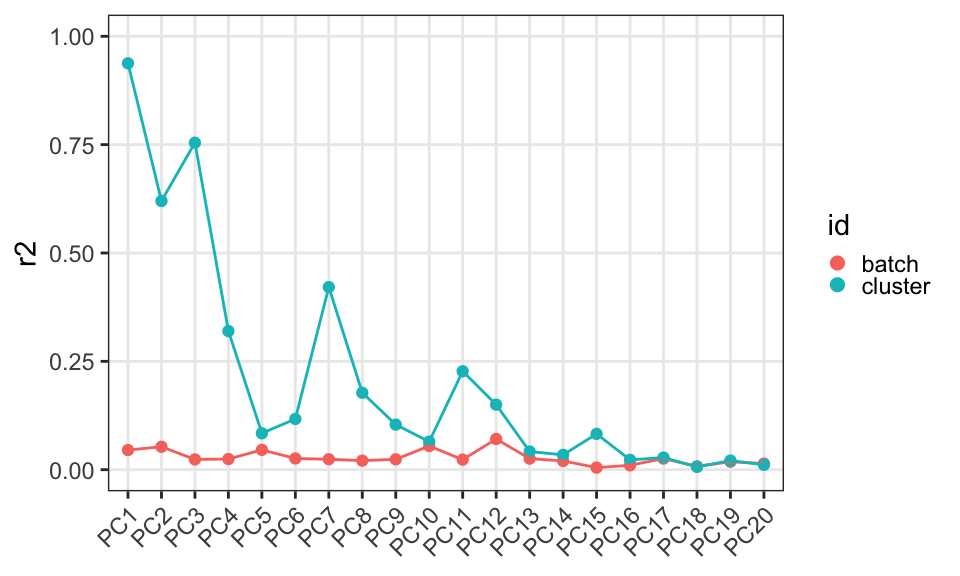
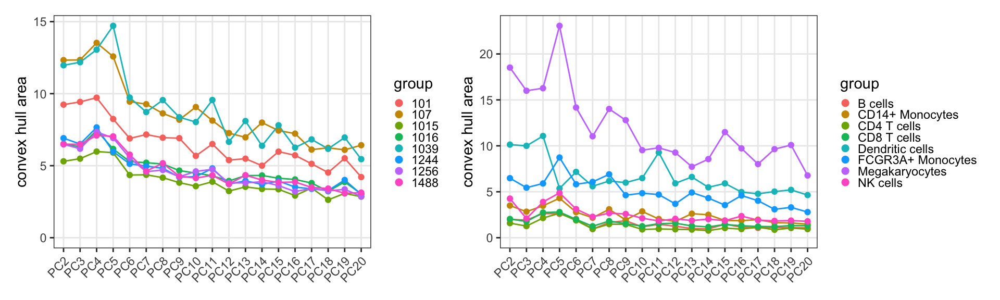
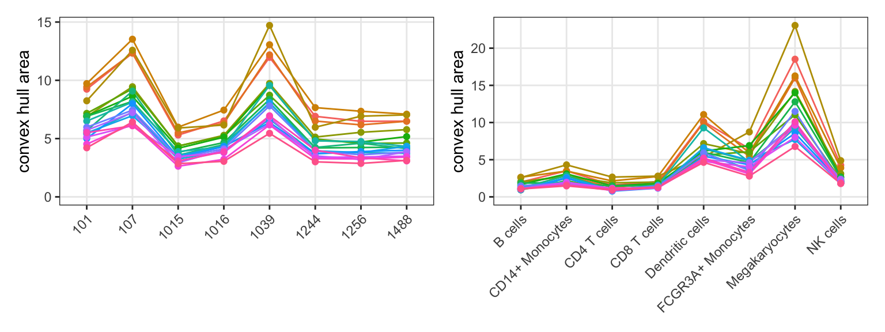
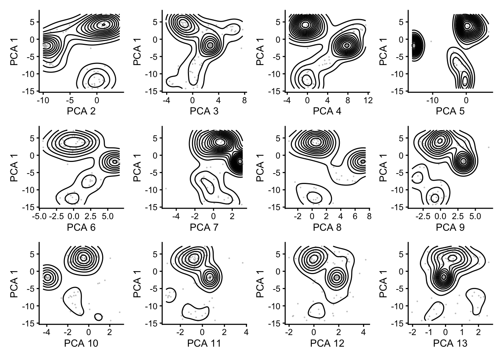

library(dplyr)
library(scran)
library(scater)
library(ggplot2)
library(patchwork)Kang18
Preamble
source("utils.R")Load data
(sce <- readRDS("outs/Kang18.rds"))class: SingleCellExperiment
dim: 35635 12315
metadata(0):
assays(2): counts logcounts
rownames(35635): MIR1302-10 FAM138A ... MT-ND6 MT-CYB
rowData names(3): ENSEMBL SYMBOL hvg
colnames: NULL
colData names(3): cluster batch sizeFactor
reducedDimNames(2): TSNE PCA
mainExpName: NULL
altExpNames(0):Analysis
# pairs of dimension reduction & categories
# to use for principal component regression
names(dr) <- dr <- c("PCA")
names(id) <- id <- c("batch", "cluster")
df <- expand.grid(dr = dr, id = id)pcr <- mapply(
SIMPLIFY = FALSE,
dr = df$dr, id = df$id,
\(dr, id) .pcr(sce, id, dr)) |>
do.call(what = rbind) |>
`rownames<-`(NULL)
head(pcr) id dr nd r2 pv r2pv
1 batch PCA PC1 0.04531375 15.7184821 0.71226333
2 batch PCA PC2 0.05288043 2.7946178 0.14778058
3 batch PCA PC3 0.02367575 1.9401233 0.04593388
4 batch PCA PC4 0.02458710 1.5769556 0.03877276
5 batch PCA PC5 0.04572454 0.8855728 0.04049241
6 batch PCA PC6 0.02589801 0.7876940 0.02039971cha <- mapply(
SIMPLIFY = FALSE,
dr = df$dr, id = df$id,
\(dr, id) .cha(sce, id, dr)) |>
do.call(what = rbind) |>
`rownames<-`(NULL)
head(cha) dr id group nd area
1 PCA batch 101 PC2 9.239007
2 PCA batch 101 PC3 9.428966
3 PCA batch 101 PC4 9.720581
4 PCA batch 101 PC5 8.241781
5 PCA batch 101 PC6 6.891452
6 PCA batch 101 PC7 7.162336Visualization
.plot_r2(pcr)
.plot_ch(cha, x = "nd")
.plot_ch(cha, x = "group")
# indeed, megakaryocytes are
# all over the place in all PCs
sub <- sce[, sce$cluster == "Megakaryocytes"]
lapply(seq(2, 13), \(.) {
.plot_dr(sub, id = NULL, nd = c(., 1)) +
geom_density2d(col = "black")
}) |> wrap_plots(nrow = 3)